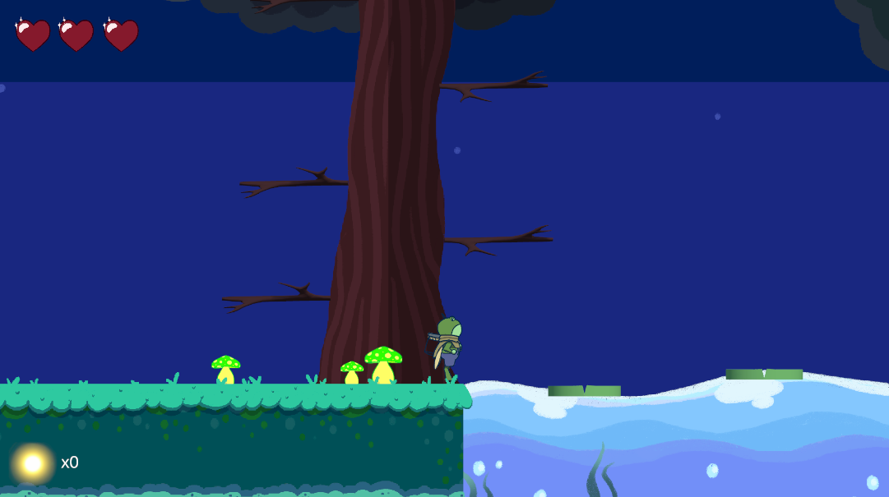

About the Project
Toadally Lit (originally titled Colosseum) was my first Unity project — a 2D platformer combat game focused on responsive controls and engaging boss battles. The game challenges players through multiple combat stages, combining timing and movement precision to win each encounter.
Development Details
As my introduction to Unity, this project helped me learn the fundamentals of physics interactions, sprite animation, and enemy AI design. I also used Blender to model basic 3D elements and export them into the 2D environment, creating a layered and dynamic look.
Project Info
- Duration: 2 months
- Technologies: C#, Unity, Blender
- Role: Boss combat system designer, 3D asset contributor
Screenshots
Main Character
Combat Environment